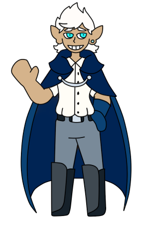

Introduction
"The nations of the world are uneasy following the previous event, causing tensions to rise in political and economic portions of the mortal population. Within the unease, a strange and bizarre ailment has begun to affect a small few in the major cities of the world—unseen by all but those few who witness its effects first hand. It seem, as of now, to primarily influence the mind; creating harmful behaviors, exacerbating the traumas and coping mechanisms of those effected, creating a perfect storm of self destructive behaviors. Going unnoticed, these strange experiences have not yet even become rumors. Where did this begin, and how will it develop? How will the world return to normal following the things it's seen, and what part will this strange new variable play?"
This document outlines the public information that will be distributed during the In Choro Lunae event, and describes the various ways the event will be carried out.
The event is designed to run for a medium length period of time, with the potential for extensions should people be interested in keeping it going. In Choro Lunae is an exploration of character's internal struggle, as well as the environmental struggle faced in the various cities around the world of Terrillam. Due to the heavy nature of these ideas, we have chosen to make this theme opt-in rather than opt-out. To read more about the themes expressed, and to find the form to opt-in, please read our sensitivity document.
In Choro Lunae CW Doc
The rest of this document is information that has been publicly released Out of Character (OOC) for the event. All information is to be considered OOC, as all In Character knowledge should be shown directly in canon works. Each section below describes an aspect of the event in detail, and may contain a small set of prompts at the end. The prompts are a collection of questions, split into categories such as "general" "group" "city" etc., that you may use as you'd like. There will be a channel made for any stories relating to the event, so we can all help build the story and see how the characters overcome the challenges they face.
Please feel free to send any questions to @Hoosawasa#1111, should you be unsure about anything at all. My DM's are always open, as I have plenty of opportunities for characters to be in the spotlight during this event, and I am also more than willing to do everything I can to make you comfortable. I would absolutely prefer my story get spoiled to make sure you are ready to deal with what's to come, please just ask.
Additionally, We are looking for opportunities for smaller, more light-hearted events for those who don't wish to participate in this one. Does your city have a dragon problem, or a dark wizard conspiracy? Does your character's backstory have an untouched thieve's guild you think would be fun to throw into the world, or does your deity feel like bestowing untested and potentially volatile magic items on unsuspecting mortals for their enjoyment?
If you have any fun story you'd like to play out in this world, please send a message to any of the mods and they will help you get off your feet.
Lukas Attomy
Appearance
Lukas is a young man, standing around 6'. He is 23, the last of his youthful features fading away to reveal the face of a young man. His hair is short and stark white, a medium length cut around the front that's styled to form a little peak of white above his brow. His eyebrows and eyelashes are also white, which is a stark contrast to his tanned skin and cyan eyes. He has a short nose, a strong jawline that has a bit of white stubble from his journey, and small pointed ears angled slightly upwards.
He wears a button up shirt with a standard traveller's cloak, a pair of canvas pants tucked into heavy leather boots, and a large scarf wrapped around his neck. Most of the things he has are tucked into a pack he keeps under his cloak, which also hides his shortsword and various daggers.

Personality
He is an amicable young man, with a hearty sense of humor despite his relative seriousness. Lukas sees his mission as one of utmost importance, and this responsibility tends to make him come across as a little overly diplomatic. He is strangely unfamiliar with the world and how it works, so he can occasionally not understand topics that would otherwise be obvious to most. He is, however, always very neat, timely, and well spoken.
He seems to be secretive about aspects of his life, dodging questions relating to where he's from and what his past is like. Other than this, however, he seems more than willing to discuss his intentions.
His Mission
Lukas describes himself as a follower of the God "sanity", a god that has been lost to the world for thousands of years. He says he has been contacted by the God, and given a great mission—To stop the end of the world. He says Madness, the counterpart to sanity, has returned as well, and seeks to consume the world. It will drag all into an endless unknown, unless something is done to prevent it.
He describes the current part of his mission as surveying, trying to see how much damage has already been done. He's travelling the land, using a device he was granted by his God that allows him to see and record the effects of madness that have already begun to take hold in the world. He's also asking people about recent events and how they've impacted individuals, as well as the world at large.
He says he's afraid that all the chaos of the past few months could potentially create the perfect opportunity for madness to begin its attempts to enter back into the world—in fact, he believes that it was these circumstances that led to madness' return in the first place. He wants to keep the situation secret for the time being, despite its urgency, as the fear that spreading the information too soon would cause would almost certainly lead to further harm done—among other reasons.
The Item
He holds a strange item, that he refuses to give to anyone. It looks like a floating black pyramid—however the geometry of the object seems impossible, like a physical optical illusion. About the size of a golf ball, it floats above any surface never touching anything, and it always is surrounded by a dark glow of magic. If seen using it, he will take the object out, look through it at various angles, and jot certain information down—although he prefers to keep the item hidden as it seems to be very important to him.
| General Prompt: Has your character directly interacted with him? Were they questioned by him? Did they follow him out of curiosity, or to discover why he's here? Were they sent to investigate him on behalf of someone else? Did they see his strange item? |
| City Prompt: Did your city notice the stranger asking odd questions? How was he received by the people? Would an outsider like him stand out in the crowds? Would his strange item bring attention to him, or blend in with the rest of the city? Would the government officials notice him? Would he get questioned in turn? |
Onset of Something Terrible
Across the land of Terrillam, not yet noticed by most, there is something terrible beginning. The God of madness, of who almost nothing is known, is slowly beginning to affect the mortal world causing mass unrest and unease. It begins slowly, however it quickly becomes far worse than anyone could know—this will be the primary obstacle faced in this Event.
The Madness is a slow progression towards instability, whether that be emotional, personal, spatial, etc. It effects each person differently, working in unique ways on all those effected. It occurs within the presence of trauma, and is exacerbated by stress and anxiety. For ease of description, we will lay out 4 phases for how it affects those it takes a hold of:
| A Quiet Beginning |
The madness begins slowly, for most going unnoticed. It manifests as unhealthy behaviors, small things that are normal for most people. This is the earliest stage, and most people will not notice anything different, or if they do they will assume it's just a couple of bad days. |
| Warning Signs |
In this stage, some individuals will begin to notice there is something wrong. Coping mechanisms that previously worked will begin to fail, old behaviors moved past will start to reappear, old patterns will be slipped into—still relatively normal behavior, however it will be difficult to move past. Here, things will begin to impact day to day life, making things more difficult. Importantly, old memories will begin to resurface unprompted—both normal and traumatic.
At this stage, these odd behaviors will be noticed by those around the one afflicted. If a large portion of the population hits this stage, then the city will begin to experience a steady decline in production and general wellbeing, which may be noticed by the leading bodies. |
| A Roar Begins |
By this stage, most individuals will be well aware something is happening to them. Many will have already slipped into unhealthy behaviors, but now will have periods that cannot be explained away. Externally, this begins as losing focus, occasionally forgetting simple things, or forgetting to do normal self-care. However, as things progress it can lead to prolonged states of absentminded-ness, an inability to do one's jobs or even maintain one's hobbies, and can lead to self-isolation as one fails to leave their home.
Internally, the worst of the progression begins. For some, they will begin experience strange losses of time, forgetting where they are and finding themselves in places they normally wouldn't be. For others, they instead feel as though they've been trapped in their memories, forced to think endlessly about what's occurred. Others Will become obsessed with their work, or paralyized with fear, or more paranoid than they normally would be.
It is unique for each individual, but here is where the worst of the madness begins |
| The Strangeness Blooms to Fruition |
Here, individuals begin to lose all control of their lives. The strangeness that has been building up consumes their waking thoughts, surrounding them in a sea of confusion and loss. Without anything or anyone to hold onto, they begin to fall away to the bizarre place they have found themselves.
This point is unique to each individual, but for most intents and purposes, this character is to be considered Lost—however, their author is allowed to describe exactly what this means for this character. |
Although these 4 phases are a good guideline for how things progress, it is neither set in stone, nor is any phase clearly discernible from the others. Each individual will move through the this differently, some will have a harder time than others, but it is not possible to truly draw a clear line between each step towards madness.
How long does this Take
The time it takes for an individual to reach the end of this process is different for every person. Madness is a disarray of who you are, a lack of control and order, and as such it will effect character depending on how well they are doing. Certain characters, who's mental wellbeing is already strained and who have little to no support system will progress quickly, as their lives are already in the disorder that madness thrives upon—In turn, characters with support systems and good holds on their wellbeing may never progress past a certain point, if they are able to be affected at all.
It's up to you, as an author, to decide for your character how they would progress through this ordeal. Take into account how they are doing, what support they have, the situations they are in, the things that happen to them and the people they love, and the things they've seen and done. You know your character better than anyone, but questions will always listened to, should you be unsure how to approach this.
Animal Intuition
Animals have a profound and deep connection with the unseen and unheard—animals who can feel earthquakes hours before they occur and creatures that can smell blood from miles away—there are many instinctual aspects of animals that common mortals do not have. These instincts can provide halfies and familiars with an advantage—they can see the madness coming. For some it's the feeling of an area, and unsettling vibe they cannot put words to that lets them know they need to leave before things get bad, for other's it's an insight into the feelings of those around them, lending them knowledge into their own minds they don't have themselves.
It's different for every animal and halfie, but most are able to feel at least some warning of what's to come. It is, however, unprovable and unclear, meaning many may not listen to them, and even if they did the feeling isn't enough to truly understand what is to come.
Additionally, Familiars can provide a sense of comfort and familiarity that can help combat the spreading unrest. Acting like support animals, many can rely on their familiars to help hold these forces back for a time and can help individuals as they face the things that come at them.
Madness & Otherworldly
Madness affects the otherworldly differently than the mortals. It tends to take longer for the otherworldly to become touched by the madness, however as we've gone over in the previous section this is in no way a set rule—should your character be predisposed to something like this, they could very well fall quicker than most mortals, and vice versa.
However, in general the otherworldly tend take longer than mortals to fall through the stages, as they are less in touch with the world. They are immortal, many far older than most any mortal, so their connection to current events and problems is lessened.
Additionally, their connection with their deity grants them a bonus others simply don't have: They have the rituals of following and worship that give them routine, something familiar that makes things like remembering and experiencing time easier. They have a guiding voice they can turn to for support in times of need, and a faith that can give them something to focus on and hold close as they traverse these strange times. For most, those who are still in touch with their patron deity, their existence as something needed also grants them a certain magical barrier against these things.
The effects on the Otherworldly is in the end, however, potentially far worse than for mortals. These things feed on memories and traumas, and the Otherworldly are immortal—and many are products of resurrection. They have far more memories for the madness to use against them, more negative behaviors to have exacerbated by the effects of this strange power, more experiences to have turned against them. It may take longer, but for most it is also far more difficult to deal with, as time scars us all.
They are also beings of power that have been given a purpose. These things can begin to overtake them, taking over their healthy lives and pushing them too far. Their duties can begin to replace their normal behaviors, overworking them and causing them further stress that only makes their progression move faster. Their memories fade and become confusing, like mortals, but they're also replaced with their drive to carry out their duties. alternatively, this progression can weaken their connection to their patron. As they lose touch with who they are, their connection to their God can begin to fade, the words of their patron becoming harder to understand, their instruction distorted by the effects of madness. For some, this comes as a blessing, but for most it is another source of stress in an already addled mind.
In the end, due to the extreme stress and lack of care from their deity, huskification—normally a rare problem— is a grave risk, and is accelerated by the effects of madness, leading to corruption as a potential outcome. As huskification begins, the Otherworldly's memories will begin to deteriorate faster than mortals, and the telltale signs of huskification will begin to show. Many otherworldly experience a common symptom not before seen in huskification—hallucinations. Many experience visions of themselves corrupted, and some will become convinced they are already husks. Whether or not this is true, the stress this causes leads to them being pushed further towards madness and eventual huskifiction.
Madness & Magic
Magic is complicated—a skill to be learned and practiced—and as such it tends to be heavily impacted by madness. On the individual level, magic becomes more and more difficult to perform correctly, and then eventually at all. The chaos and disorder caused by madness effects both that caster by breaking their concentration, and the spell cast as one's thinking tends to play a role in the magic produced.
In areas where madness has begun to spread far, it will also effect magic overall. Systems that rely on the powersource will begin to fluctuate, breaking or even becoming unstable. Spells cast in that area will have their meaning change, twisted by the influences there and made into something stanger. Overall, magic tends to become more unreliable.
However, this is not always the case. Certain forms of magic can act as powerful sources of respit within chaos: Blessings from deities, powerful warding spells, protective items and beings—there are still ways to protect against the effects of the madness.
All these forms of magic will, however, need to be more powerful than the area they are brought into, and may be weakened by the madness that fills that place. Eventually the same power that protects you may turn against you.
Recovery
Recovery is always possible, as long as the world is still here. No matter how bad things become, if the character is still in the story, then they are able to recover. It won't be instant, and it will take work, but these are things that can be worked through and over come.
Just like madness, recovery is different for everyone—no two people heal the same, but all can heal nonetheless. However, there are 3 things that tend to help:
Distance: It is extremely difficult to recover from something whilst you are in the midst of it. Most will need to remove themselves from the situation, if that's possible, or find an alternative means of escape—however escapism and avoidance are not always healthy in their own right.
Time: Nothing heals instantly, even in a world with magic. We require time to help us deal with what we've gone through, to help us process and recover. Although certain magic can help, there is no instant cure for these things—we must be patient, and give ourselves the time we need.
Support: Probably one of the most important things when it comes to recovery—we are not meant to be alone. Even those most lone wolves and introverts among us need some support and connection, even if it isn't in the ways one would expect. For some, it's love and support, for other's its simply listening, and for others it's letting them help. We all need support in different ways, but it can often be what saves us.
This section has no prompts, as it is the main driving force behind this event. You are free to describe how your character is effected, how they deal with these things, how they recover should they fall prey to madness, determine the rate of progression, etc.
It is recommended, however, that you do not simply throw your character to the madness in entirety immediately—These things are best explored.
The Spreading Unrest
The personal effects of this strangeness are the first to be noticed, although not before they have begun to affect many. The initial focus is on how the individual is impacted, which turns eyes away from the spread in the area.
Madness is something that impacts places as well as it impacts individuals. Unless dealt with, cities will begin to feel the effects of the strangeness taking root, and be slowly changed—much like it's citizens.
| The Madness Sprouts |
Here, the beginning of the spread has just begun. The citizens will begin to feel the personal effects of the madness, however this will largely be the extent of the problems on the citizen level. Governmentally, the issues the city face will be exacerbated by various means, wealth disparities growing wider, human rights being placed into question through various means, tensions between people groups and political parties begin to rise.
For most cities in the beginning, this strange rise in difficulties will most likely be seen as more tensions from the previous event, however if the Madness is well known of at this point then this will mark the beginning in that area. |
| The Bizarre Flourishes |
Things become strange. The layout of the city will begin to shift, making maps inaccurate despite having been set out decades or centuries prior. The problems of the city will hit their extremes, money seemingly vanishing from most homes and exorbitant absurd heights of wealth will begin to show up on the tables of the rich, once meaningless arguing will turn to enraged fighting, populated areas of the cities becoming vacant as people isolate from one another.
Eventually, a pattern will begin to emerge: The themes of the city—those of the deity it was built around or it's main concepts such as industry or magic or broadcasting etc.—will begin to show up in strange and unexpected ways. The city will begin to twist into a distorted version of itself, normal aspects of a city replaced with bizarre and twisted versions, the streets filled with things that don't belong, the buildings growing and winding into one another.
As the labyrinth forms, people will begin to go missing—especially those who have felt the worst of the madness. Imports and exports will dwindle, leaving the city to fend for itself as the worst of it's symptoms begin. |
| Lost to Wonderland |
This is the end stage of madness for an area. Fully consumed, completely corrupted, the city will be unrecognizable as itself. It's boundaries will bleed into the surrounding areas, buildings popping up in places where there were none, the city bleeding outwards and bringing madness with it. Even from outside, it will appear as a twisted and corrupted caricature of what it once was—but what lies within is truly strange.
Within the city is a maze, a difficult to traverse and dangerous place that seeks to consume all who enter. It has become it's themes, turned into a pure representation of the ideas behind the city. People are scarce, those few who remain are hard to find as many have been twisted into the framework of this place, and all others are trapped in the fear and chaos these places produce. Finding anything here is difficult, and bringing it back out with your mind still intact is much harder.
These places are to be avoided at all costs, and are to be considered Lost alongside all those who dwell within. |
Same as the personal madness, the progression of madness within a city is completely unique and individual. For some, the madness will spread through their chaotic and broken cities, consuming all the corrupt systems and using them as generators to sow as much chaos as they can. For others, it will take time to move through their supportive and collective population, having to work against the bonds between people.
Additionally, there are no prompts here. You are in control of how this affects those who dwell in the city, how it affects the world around, and how it's descent into madness is viewed.
The Lost
When something becomes Lost, it means they are too far gone to be able to pull themselves back. It takes a long time, and is actually quite difficult to have happen, however it will almost always require help—Very few individuals will be able to pull themselves out of this, however it is still doable, albeit extremely difficult.
The lost can be found, but it requires outside help. For people, it requires locating them and giving them guidance and support until they are able to be themselves again. For a city, it can require helping the officials gain control back through various means, or by lending a hand to help them deal with the problems their cities face. For all other things, it simply requires finding them and bringing them out of wherever they've been hidden away.
As long as something, or someone, can still be reached, they can always be found.
Effectively, however, this means that for the time being, this character/place/etc. is no longer a part of the story until they are found. They cannot help others, take part in other's stories, or otherwise interact with the world until this is changed.
{kind=link}